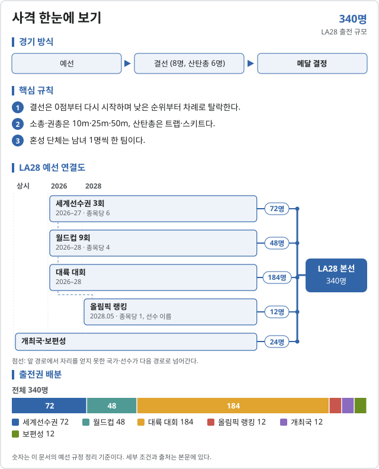
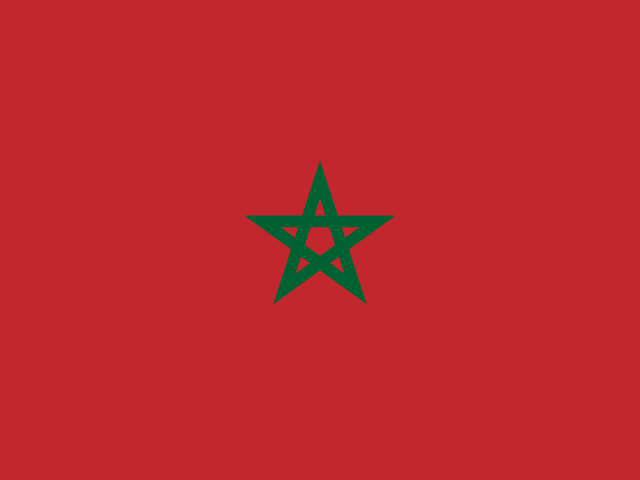
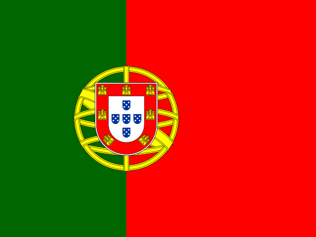

사격 (Shooting)
2028 LA 올림픽 사격에는 15개 세부종목이 있다.
- 남자 10m 공기권총 · 25m 속사권총 · 10m 공기소총 · 50m 소총 3자세 · 트랩 · 스키트
- 여자 10m 공기권총 · 25m 권총 · 10m 공기소총 · 50m 소총 3자세 · 트랩 · 스키트
- 혼성 10m 공기권총 단체 · 10m 공기소총 단체 · 트랩 단체

LA28 출전 확정 2026-11-07 기준
| 국가 | 경로 | 비고 |
|---|---|---|
| 2026 세계선수권 (도하) | 10m 공기권총 남자 · Hu Kai (금) | |
| 2026 세계선수권 (도하) | 10m 공기권총 남자 · Jaypal Malviya (은) | |
| 2026 세계선수권 (도하) | 10m 공기권총 남자 · Jindřich Dubový (동) | |
| 2026 세계선수권 (도하) | 10m 공기권총 여자 · Jiang Ranxin (금) | |
| 2026 세계선수권 (도하) | 10m 공기권총 여자 · Veronika Major (동) | |
| 2026 세계선수권 (도하) | 10m 공기권총 여자 · 결선 메달 밖 (선수 확인 필요) | |
| 2026 세계선수권 (도하) | 25m 속사권총 남자 · Florian Peter (금) | |
| 2026 세계선수권 (도하) | 25m 속사권총 남자 · Clément Bessaguet (은) | |
| 2026 세계선수권 (도하) | 25m 속사권총 남자 · 결선 메달 밖 (선수 확인 필요) | |
| 2026 세계선수권 (도하) | 10m 공기소총 남자 · Sheng Lihao (금) | |
| 2026 세계선수권 (도하) | 10m 공기소총 남자 · Miran Maričić (동) | |
| 2026 세계선수권 (도하) | 10m 공기소총 남자 · 결선 메달 밖 (선수 확인 필요) | |
| 2026 세계선수권 (도하) | 10m 공기소총 여자 · 반효진 (금) | |
| 2026 세계선수권 (도하) | 10m 공기소총 여자 · Han Jiayu (은) | |
| 2026 세계선수권 (도하) | 10m 공기소총 여자 · 결선 메달 밖 (선수 확인 필요) | |
| 2026 세계선수권 (도하) | 스키트 남자 · Jesper Hansen (금) | |
| 2026 세계선수권 (도하) | 스키트 남자 · Azmy Mehelba (은) | |
| 2026 세계선수권 (도하) | 스키트 남자 · Abdulaziz Al-Saad (동) | |
| 2026 세계선수권 (도하) | 스키트 여자 · Jiang Yiting (금) | |
| 2026 세계선수권 (도하) | 스키트 여자 · 결선 메달 밖 (선수 확인 필요) | |
| 2026 세계선수권 (도하) | 스키트 여자 · 결선 메달 밖 (선수 확인 필요) |
사격 문서 안내
사격은 총기에 따라 권총·소총·산탄총 세 갈래로 나뉜다. 세부종목 이름을 누르면 LA28 세부종목 문서, 대회 칸을 누르면 그 대회 문서의 해당 종목 위치로 간다.
| 세부종목 | LA28 쿼터 | 파리 2024 금 | 한국 주요 선수 | 2026 도하 세선 | 2026–28 대륙 | 2027 월드컵 | 2027 세선 | 2028 결산 | 상세 |
|---|---|---|---|---|---|---|---|---|---|
| 권총 선발 경로·MQS·한국 전망 → | |||||||||
| 남자 10m 공기권총 | 29명 | Xie Yu (CHN) | 홍수현, 소승섭 | 보기 | 보기 | 보기 | 보기 | 보기 | 성적·쿼터 |
| 남자 25m 속사권총 | 28명 | Li Yuehong (CHN) | 이건혁, 송종호, 윤서영 | 보기 | 보기 | 보기 | 보기 | 보기 | 성적·쿼터 |
| 여자 10m 공기권총 | 29명 | 오예진 (KOR) | 추가은, 오예진, 김보미 | 보기 | 보기 | 보기 | 보기 | 보기 | 성적·쿼터 |
| 여자 25m 권총 | 28명 | 양지인 (KOR) | 양지인, 오예진, 봉서린 | 보기 | 보기 | 보기 | 보기 | 보기 | 성적·쿼터 |
| 혼성 10m 공기권총 단체 | 개인 출전자로 구성 | Zorana Arunović·Damir Mikec (SRB) | 추가은, 홍수현 | 보기 | 보기 | 보기 | 보기 | 보기 | 성적·쿼터 |
| 소총 선발 경로·MQS·한국 전망 → | |||||||||
| 남자 10m 공기소총 | 29명 | Sheng Lihao (CHN) | 신민기, 박하준, 권협준 | 보기 | 보기 | 보기 | 보기 | 보기 | 성적·쿼터 |
| 남자 50m 소총 3자세 | 28명 | Liu Yukun (CHN) | 정승우, 박성현, 권협준 | 보기 | 보기 | 보기 | 보기 | 보기 | 성적·쿼터 |
| 여자 10m 공기소총 | 29명 | 반효진 (KOR) | 반효진, 권유나, 권은지 | 보기 | 보기 | 보기 | 보기 | 보기 | 성적·쿼터 |
| 여자 50m 소총 3자세 | 28명 | Chiara Leone (SUI) | 김지은, 오세희 | 보기 | 보기 | 보기 | 보기 | 보기 | 성적·쿼터 |
| 혼성 10m 공기소총 단체 | 개인 출전자로 구성 | Huang Yuting·Sheng Lihao (CHN) | 반효진, 박하준 | 보기 | 보기 | 보기 | 보기 | 보기 | 성적·쿼터 |
| 산탄총 선발 경로·MQS·한국 전망 → | |||||||||
| 남자 트랩 | 28명 | Nathan Hales (GBR) | 안대명 | 보기 | 보기 | 보기 | 보기 | 보기 | 성적·쿼터 |
| 남자 스키트 | 28명 | Vincent Hancock (USA) | 이종준 | 보기 | 보기 | 보기 | 보기 | 보기 | 성적·쿼터 |
| 여자 트랩 | 28명 | Adriana Ruano (GUA) | 이보나 | 보기 | 보기 | 보기 | 보기 | 보기 | 성적·쿼터 |
| 여자 스키트 | 28명 | Francisca Crovetto (CHI) | 장국희 | 보기 | 보기 | 보기 | 보기 | 보기 | 성적·쿼터 |
| 혼성 트랩 단체 | 개인 출전자로 구성 | 신설 | 안대명, 이보나 | 보기 | 보기 | 보기 | 보기 | 보기 | 성적·쿼터 |
예선 대회
- 예선 대회 전체 15종목 × 대회 표, 일정·특례·재배정
- 2026 도하 세계선수권 첫 LA28 쿼터 대회 (2026.11.01–14)
- 2026–28 대륙 경로 아시아 54장 등 대륙 몫
- 2027 월드컵
- 2027 세계선수권 대구 소총·권총 · 카이로 산탄총
- 2028 출전권 결산 올림픽 랭킹(2028.05.01)·최종 배정
2025–26 시즌 성적 (참고, 쿼터 없음)
2026 주요 대회 결과 2026-11-07 15:29 KST
위키백과 대회 문서에서 자동으로 모은다. 대회 중에는 한 시간마다 새로 읽는다. 한국 선수가 있는 줄은 붉게 칠했다. 하계 실시간 전체 →
ISSF 세계사격선수권 도하 · 11.01~11.14 진행 중 결과 20/41종목 · 한국 금1 은1 동3
| 종목 | 금 | 은 | 동 |
|---|---|---|---|
| 권총 | |||
| 남자 10m 공기권총 | |||
| 남자 25m 속사권총 | |||
| 남자 50m 권총 | Anton Aristarkhov 중립 선수 (러시아 선수단) | ||
| 여자 10m 공기권총 | |||
| 여자 50m 권총 | |||
| 남자 10m 공기권총 단체 | |||
| 남자 25m 속사권총 단체 | |||
| 남자 50m 권총 단체 | |||
| 여자 10m 공기권총 단체 | |||
| 소총 | |||
| 남자 10m 공기소총 | |||
| 여자 10m 공기소총 | |||
| 남자 10m 공기소총 단체 | |||
| 남자 50m 소총 복사 단체 | |||
| 여자 10m 공기소총 단체 | |||
| 여자 50m 소총 복사 단체 | |||
| 혼성 10m 공기소총 단체 | |||
| 산탄총 | |||
| 남자 스키트 | |||
| 여자 스키트 | |||
| 남자 스키트 단체 | |||
| 여자 스키트 단체 | |||
남은 종목: 남자 25m 센터파이어 권총, 남자 25m 스탠더드 권총, 여자 25m 권총, 여자 25m 스탠더드 권총, 남자 25m 센터파이어 권총 단체, 남자 25m 스탠더드 권총 단체, 여자 25m 권총 단체, 여자 25m 스탠더드 권총 단체, 혼성 10m 공기권총 단체, 남자 50m 소총 3자세, 남자 50m 소총 복사, 여자 50m 소총 3자세, 여자 50m 소총 복사, 남자 50m 소총 3자세 단체, 여자 50m 소총 3자세 단체, 남자 트랩, 여자 트랩, 남자 트랩 단체, 여자 트랩 단체, 혼성 스키트 단체, 혼성 트랩 단체
메달 순위:  중국 11-6-4 ·
중국 11-6-4 ·  스위스 2-0-0 ·
스위스 2-0-0 ·  인도 1-4-0 ·
인도 1-4-0 ·  대한민국 1-1-3 ·
대한민국 1-1-3 ·  체코 1-1-1 ·
체코 1-1-1 ·  프랑스 1-1-1 ·
프랑스 1-1-1 ·  독일 1-1-0 ·
독일 1-1-0 ·  덴마크 1-0-1
덴마크 1-0-1
LA28 출전권: 10m 공기권총 남자  중국,
중국,  인도,
인도,  체코 · 10m 공기권총 여자
체코 · 10m 공기권총 여자  중국,
중국,  헝가리,
헝가리,  이란 · 25m 속사권총 남자
이란 · 25m 속사권총 남자  독일,
독일,  프랑스,
프랑스,  체코 · 10m 공기소총 남자
체코 · 10m 공기소총 남자  중국,
중국,  크로아티아,
크로아티아,  슬로바키아 · 10m 공기소총 여자
슬로바키아 · 10m 공기소총 여자  대한민국,
대한민국,  중국,
중국,  프랑스 · 스키트 남자
프랑스 · 스키트 남자  덴마크,
덴마크,  이집트,
이집트,  쿠웨이트 · 스키트 여자
쿠웨이트 · 스키트 여자  중국,
중국,  슬로바키아,
슬로바키아,  카자흐스탄
카자흐스탄
출처: 위키백과 2026 ISSF World Shooting Championships · 2026-11-07 15:29 읽음
아이치·나고야 아시안게임 아이치·나고야 · 09.19~10.04 종료 결과 28/28종목 · 한국 금3 은5 동4
| 종목 | 금 | 은 | 동 |
|---|---|---|---|
| 남자 | |||
| 10m 공기권총 | |||
| 25m 속사권총 | |||
| 10m 공기소총 | |||
| 50m 소총 3자세 | |||
| 스키트 | |||
| 트랩 | |||
| 10m 공기권총 | |||
| 25m 속사권총 | |||
| 10m 공기소총 | |||
| 50m 소총 3자세 | |||
| 스키트 | |||
| 트랩 | |||
| 여자 | |||
| 10m 공기권총 | |||
| 25m 권총 | |||
| 10m 공기소총 | |||
| 50m 소총 3자세 | |||
| 스키트 | |||
| 트랩 | |||
| 10m 공기권총 | |||
| 25m 권총 | |||
| 10m 공기소총 | |||
| 50m 소총 3자세 | |||
| 스키트 | |||
| 트랩 | |||
| 혼성 단체 | |||
| 10m 공기권총 | |||
| 10m 공기소총 | |||
| 스키트 | |||
| 트랩 | |||
메달 순위:  중국 16-8-4 ·
중국 16-8-4 ·  인도 3-8-4 ·
인도 3-8-4 ·  대한민국 3-5-4 ·
대한민국 3-5-4 ·  카타르 2-2-0 ·
카타르 2-2-0 ·  쿠웨이트 2-1-2 ·
쿠웨이트 2-1-2 ·  일본 1-0-3 ·
일본 1-0-3 ·  우즈베키스탄 1-0-0 ·
우즈베키스탄 1-0-0 ·  카자흐스탄 0-1-4
카자흐스탄 0-1-4
출처: 위키백과 Shooting at the 2026 Asian Games · 2026-11-06 22:37 읽음
2026 ISSF 월드컵 (시즌) 탕헤르·그라나다·알마티·뮌헨·로나토·항저우·카이로·로마 · 03.25~12.08 진행 중 결과 60/75종목 · 한국 금1 은2 동2
| 종목 | 금 | 은 | 동 |
|---|---|---|---|
| 10m 공기소총 1차 그라나다 | |||
| 10m 공기소총 2차 뮌헨 | |||
| 10m 공기소총 3차 항저우 | |||
| 10m 공기소총 4차 카이로 | |||
| 50m 소총 3자세 1차 그라나다 | |||
| 50m 소총 3자세 2차 뮌헨 | |||
| 50m 소총 3자세 3차 항저우 | Matvei Potapov 중립 선수 (러시아 선수단) | ||
| 50m 소총 3자세 4차 카이로 | |||
| 10m 공기소총 1차 그라나다 | |||
| 10m 공기소총 2차 뮌헨 | |||
| 10m 공기소총 3차 항저우 | |||
| 10m 공기소총 4차 카이로 | |||
| 50m 소총 3자세 1차 그라나다 | |||
| 50m 소총 3자세 2차 뮌헨 | |||
| 50m 소총 3자세 3차 항저우 | |||
| 50m 소총 3자세 4차 카이로 | |||
| 10m 공기소총 1차 그라나다 | |||
| 10m 공기소총 2차 뮌헨 | |||
| 10m 공기소총 3차 항저우 | |||
| 10m 공기소총 4차 카이로 | |||
| 10m 공기권총 1차 그라나다 | Anton Aristarkhov 중립 선수 (러시아 선수단) | ||
| 10m 공기권총 2차 뮌헨 | |||
| 10m 공기권총 3차 항저우 | |||
| 10m 공기권총 4차 카이로 | |||
| 25m 속사권총 1차 그라나다 | |||
| 25m 속사권총 2차 뮌헨 | |||
| 25m 속사권총 3차 항저우 | |||
| 25m 속사권총 4차 카이로 | |||
| 10m 공기권총 1차 그라나다 | |||
| 10m 공기권총 2차 뮌헨 | |||
| 10m 공기권총 3차 항저우 | |||
| 10m 공기권총 4차 카이로 | |||
| 25m 권총 1차 그라나다 | |||
| 25m 권총 2차 뮌헨 | |||
| 25m 권총 3차 항저우 | |||
| 25m 권총 4차 카이로 | Teh Xiu Yi SIN | ||
| 10m 공기권총 1차 그라나다 | |||
| 10m 공기권총 2차 뮌헨 | |||
| 10m 공기권총 3차 항저우 | |||
| 10m 공기권총 4차 카이로 | |||
| 트랩 1차 탕헤르 |  Driss Haffari 모로코 | ||
| 트랩 2차 알마티 | |||
| 트랩 3차 로나토 | |||
| 트랩 4차 항저우 | |||
| 스키트 1차 탕헤르 | |||
| 스키트 2차 알마티 | |||
| 스키트 3차 로나토 | |||
| 스키트 4차 항저우 | |||
| 트랩 1차 탕헤르 | |||
| 트랩 2차 알마티 | |||
| 트랩 3차 로나토 | |||
| 트랩 4차 항저우 | |||
| 스키트 1차 탕헤르 | |||
| 스키트 2차 알마티 | |||
| 스키트 3차 로나토 | |||
| 스키트 4차 항저우 | |||
| 트랩 1차 탕헤르 |  José Manuel Bruno Faria·Inês Barros 포르투갈 | ||
| 트랩 2차 알마티 | |||
| 트랩 3차 로나토 | |||
| 트랩 4차 항저우 |
남은 종목: 10m 공기소총, 50m 소총 3자세, 10m 공기소총, 50m 소총 3자세, 10m 공기소총, 10m 공기권총, 25m 속사권총, 10m 공기권총, 25m 권총, 10m 공기권총, 트랩, 스키트, 트랩, 스키트, 트랩
메달 순위:  중국 19-10-11 ·
중국 19-10-11 ·  인도 6-3-3 ·
인도 6-3-3 ·  이탈리아 5-4-6 ·
이탈리아 5-4-6 ·  독일 3-6-4 ·
독일 3-6-4 ·  프랑스 3-5-7 ·
프랑스 3-5-7 ·  미국 3-5-0 ·
미국 3-5-0 ·  노르웨이 3-3-2 ·
노르웨이 3-3-2 ·  오스트레일리아 3-0-1 ·
오스트레일리아 3-0-1 ·  대한민국 1-2-2
대한민국 1-2-2
출처: 위키백과 2026 ISSF World Cup · 2026-11-07 15:29 읽음
예선 규정
이벤트 및 출전 쿼터
남녀 개인 12종목과 혼성 3종목에 340명이 출전한다. 쿼터는 국가 올림픽위원회(NOC)에 배정된다(랭킹·보편성은 선수 이름).
| 성별 | 일반쿼터 | 개최국쿼터 | 보편성쿼터 | 합계 |
|---|---|---|---|---|
| 남자 | 158 | 6 | 6 | 170 |
| 여자 | 158 | 6 | 6 | 170 |
| 합계 | 316 | 12 | 12 | 340 |
일반쿼터에 올림픽 랭킹 12장이 포함된다. 혼성 종목은 별도 쿼터가 없다.
예선 경로
28개 지정 대회와 올림픽 랭킹으로 정한다. 대회별 배정은 예선 대회 문서에 있다.
| 경로 | 장수 | 종목당 |
|---|---|---|
| 세계선수권 | 72 | 6 |
| 월드컵 | 48 | 4 |
| 아시아 | 54 | 소총·권총 5·4 · 산탄총 4 |
| 유럽 | 60 | 5 |
| 아메리카 | 42 | 3–4 |
| 아프리카 | 16 | 1–2 |
| 오세아니아 | 12 | 1 |
| 개최국 | 12 | 1 |
| 보편성 | 12 | 1 |
| 올림픽 랭킹 | 12 | 1 |
| 합계 | 340 | 28–29 |
소총 (10m 공기소총 · 50m 3자세)
소총 (10m 공기소총 · 50m 3자세) 선발 경로
종목: 10m 공기소총 남 · 50m 소총3자세 남 · 10m 공기소총 여 · 50m 소총3자세 여 · 규정 ↗
| 경로 | 쿼터 | 선발 방식 |
|---|---|---|
| ISSF 지정 예선 대회 | 종목당 25–26명 | [1] |
| (D.1) 올림픽 랭킹 (2028.05.01) | 종목당 1명 | [2] |
| (D.2) 개최국쿼터 | 종목당 1명 | [3] |
| (D.3) 보편성쿼터 | 종목당 1명 | [4] |
- [1]세계선수권 3회·월드컵 9회·대륙 대회. 결선 순위가 높은 선수의 NOC에 1장(MQS 이상). 세계선수권은 NOC 종목당 1장, 다른 대회는 2장까지. 선수 1명은 1장만.
- [2]지정 대회 최고 10개 성적 합. 아직 확보하지 못한 최상위 선수에게 이름으로 배정(그 NOC가 그 종목 2장 미만일 때).
- [3]미국에 종목마다 1명(MQS 달성, 그 종목 미확보 시).
- [4]삼자위원회가 배정한다(선수 이름). IOC 초청 2027.10.01, 신청 마감 2028.01.15.
권총 (10m 공기권총 · 25m)
권총 (10m 공기권총 · 25m) 선발 경로
종목: 10m 공기권총 남 · 25m 속사권총 남 · 10m 공기권총 여 · 25m 권총 여 · 규정 ↗
| 경로 | 쿼터 | 선발 방식 |
|---|---|---|
| ISSF 지정 예선 대회 | 종목당 25–26명 | [1] |
| (D.1) 올림픽 랭킹 (2028.05.01) | 종목당 1명 | [2] |
| (D.2) 개최국쿼터 | 종목당 1명 | [3] |
| (D.3) 보편성쿼터 | 종목당 1명 | [4] |
- [1]세계선수권 3회·월드컵 9회·대륙 대회. 결선 순위가 높은 선수의 NOC에 1장(MQS 이상). 세계선수권은 NOC 종목당 1장, 다른 대회는 2장까지. 선수 1명은 1장만.
- [2]지정 대회 최고 10개 성적 합. 아직 확보하지 못한 최상위 선수에게 이름으로 배정(그 NOC가 그 종목 2장 미만일 때).
- [3]미국에 종목마다 1명(MQS 달성, 그 종목 미확보 시).
- [4]삼자위원회가 배정한다(선수 이름). IOC 초청 2027.10.01, 신청 마감 2028.01.15.
산탄총 (트랩 · 스키트)
산탄총 (트랩 · 스키트) 선발 경로
종목: 트랩 남 · 스키트 남 · 트랩 여 · 스키트 여 · 규정 ↗
| 경로 | 쿼터 | 선발 방식 |
|---|---|---|
| ISSF 지정 예선 대회 | 종목당 25–26명 | [1] |
| (D.1) 올림픽 랭킹 (2028.05.01) | 종목당 1명 | [2] |
| (D.2) 개최국쿼터 | 종목당 1명 | [3] |
| (D.3) 보편성쿼터 | 종목당 1명 | [4] |
- [1]세계선수권 3회·월드컵 9회·대륙 대회. 결선 순위가 높은 선수의 NOC에 1장(MQS 이상). 세계선수권은 NOC 종목당 1장, 다른 대회는 2장까지. 선수 1명은 1장만.
- [2]지정 대회 최고 10개 성적 합. 아직 확보하지 못한 최상위 선수에게 이름으로 배정(그 NOC가 그 종목 2장 미만일 때).
- [3]미국에 종목마다 1명(MQS 달성, 그 종목 미확보 시).
- [4]삼자위원회가 배정한다(선수 이름). IOC 초청 2027.10.01, 신청 마감 2028.01.15.
개최국·보편성 쿼터
개최국 미국은 남녀 개인 종목마다 1명(MQS 달성 조건)을 받는다. 반납된 개최국 자리 중 처음 6석(성별 3·분야별 1)은 아메리카 NOC 중 쿼터가 없는 국가의 랭킹 차순위에게 먼저 간다.
보편성 쿼터는 성별 6명(종목당 1명)이다. IOC 초청 2027.10.01, 신청 마감 2028.01.15.
참가 자격
올림픽 헌장(제41조 국적, 제43조 세계반도핑규약 및 경기 조작 방지 규정), 여성 카테고리 보호에 관한 IOC 정책, IOC 참가 조건 및 ISSF 규정을 충족해야 한다.
- 최소 자격 점수(MQS)를 지정 대회(세계선수권·월드컵·월드컵 파이널·그랑프리·대륙선수권·대륙종합대회 등) 예선 또는 본선에서 2026.07.31–2028.05.01에 달성해야 한다.
- MQS를 달성한 두 번째 종목에 겸업 출전할 수 있다(그 종목 NOC 상한 안).
쿼터는 국가 올림픽위원회(NOC)에 배정되며, 올림픽 랭킹·보편성 쿼터만 선수 이름으로 배정된다. 혼성 3종목은 개인 10m·트랩 출전 선수로 팀을 만든다(트랩 혼성 최대 18팀).
예선 일정
예선 및 대회 일정
2026년에는 11월 도하 세계선수권(36장)과 리마 아메리카선수권(12장)에서 첫 쿼터가 나온다.
| 날짜 | 일정 |
|---|---|
| 2026.07.31 | 예선 기간 시작 |
| 2026.11.01–14 | 세계선수권 도하 (36장) |
| 2026.11.21–12.01 | 아메리카선수권 리마 (12장) |
| 2027.03–10 | 월드컵 7회 · 유럽 대회 |
| 2027.09.23–10.02 | 세계선수권 산탄총 카이로 (12장) |
| 2027.10.28–11.09 | 세계선수권 소총·권총 대구 (24장) |
| 2027.11–12 | 아시아·오세아니아선수권 |
| 2028.01.05–18 | 아시아선수권 도하 (20장) |
| 2028.03–04 | 아시아·유럽선수권 |
| 2028.05.01 | 예선 종료 · 올림픽 랭킹 발표 |
| 2028.05.07 | ISSF 쿼터 통보 |
| 2028.05.21 | 국가 확인 · 종목 교환 신청 마감 |
| 2028.06.11 | 재배정 마감 |
| 2028.06.26 | LA28 스포츠 엔트리 마감 |
직전 올림픽 메달리스트
2024 파리 올림픽
| 세부종목 | 금 | 은 | 동 |
|---|---|---|---|
| 남자 10m 공기권총 | Xie Yu (CHN) | Federico Nilo Maldini (ITA) | Paolo Monna (ITA) |
| 남자 25m 속사권총 | Li Yuehong (CHN) | 조영재 (KOR) | Wang Xinjie (CHN) |
| 남자 10m 공기소총 | Sheng Lihao (CHN) | Victor Lindgren (SWE) | Miran Maričić (CRO) |
| 남자 50m 소총 3자세 | Liu Yukun (CHN) | Serhiy Kulish (UKR) | Swapnil Kusale (IND) |
| 남자 트랩 | Nathan Hales (GBR) | Qi Ying (CHN) | Jean Pierre Brol (GUA) |
| 남자 스키트 | Vincent Hancock (USA) | Conner Prince (USA) | Lee Meng-yuan (TPE) |
| 여자 10m 공기권총 | 오예진 (KOR) | 김예지 (KOR) | Manu Bhaker (IND) |
| 여자 25m 권총 | 양지인 (KOR) | Camille Jedrzejewski (FRA) | Veronika Major (HUN) |
| 여자 10m 공기소총 | 반효진 (KOR) | Huang Yuting (CHN) | Audrey Gogniat (SUI) |
| 여자 50m 소총 3자세 | Chiara Leone (SUI) | Sagen Maddalena (USA) | Zhang Qiongyue (CHN) |
| 여자 트랩 | Adriana Ruano (GUA) | Silvana Stanco (ITA) | Penny Smith (AUS) |
| 여자 스키트 | Francisca Crovetto (CHI) | Amber Rutter (GBR) | Austen Smith (USA) |
| 혼성 10m 공기권총 단체 | Zorana Arunović·Damir Mikec (SRB) | Şevval İlayda Tarhan·Yusuf Dikeç (TUR) | Manu Bhaker·Sarabjot Singh (IND) |
| 혼성 10m 공기소총 단체 | Huang Yuting·Sheng Lihao (CHN) | 금지현·박하준 (KOR) | Alexandra Le·Islam Satpayev (KAZ) |
| 혼성 스키트 단체 | Diana Bacosi·Gabriele Rossetti (ITA) | Austen Smith·Vincent Hancock (USA) | Jiang Yiting·Lyu Jianlin (CHN) |
| 혼성 트랩 단체 | 신설 | ||
링크 없는 행은 LA28에 없는 파리 2024 세부종목이다. 출처: Wikipedia 각 종목 2024 하계 올림픽 메달 표.
대한민국
주요 선수
쿼터 확보 현황
| 세부종목 | 확보 인원 | 상태 | 획득 대회 |
|---|
남은 예선 일정
각주
외부 링크
공식 근거
- ISSF · LA28 Qualification System (PDF, 2026.06.19)
- Olympics.com · 아시안게임 사격 한국 메달
- Olympics.com · 아시안게임 한국 메달리스트 (2026.10.04)
규정 확인일: 2026.10.04. IOC가 게시한 ISSF 원문 PDF(13쪽, Version as of 19 June 2026)를 기준으로 정리했다. 원문 일정표의 2028 유럽선수권 25/50m(오시예크, 04.26–05.07)는 예선 마감일(05.01) 뒤에 끝난다. 원문 그대로 적었다. 기존 사격 페이지의 2026.6.19 버전 표기와 일치한다. 본 문서는 비공식 한국어 요약이며 최종 적용은 ISSF 공지를 따른다.
사격 · 올림픽예선 | 규정 확인 2026.10.04 · 한국 전망 기준 2026.10.04